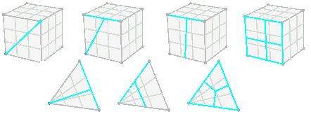
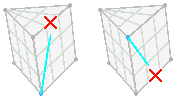
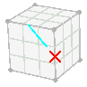
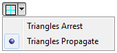
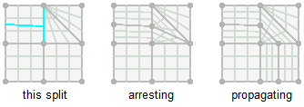
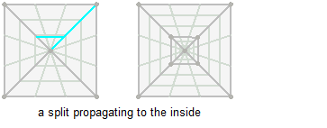
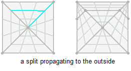
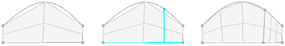
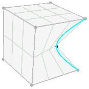
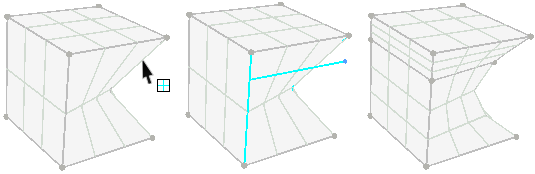

拆分块体
工具栏中的拆分块体工具（ ）使鼠标进入一种模式，在该模式下可以逐个拆分块体。
）使鼠标进入一种模式，在该模式下可以逐个拆分块体。
- 要执行点到点拆分，请单击第一个点，然后单击同一面上与其相对的点。
- 您可以从一个点拆分到同一面上与其相对的棱边。
- 在面中央单击将拆分该面。
青色线条指示将发生何种类型的拆分。


图 1：这种类型的拆分在楔形体上是不允许的。
块体构建的选项对话框中包含一个设置，用于确定是否显示捕捉目标。当鼠标靠近棱边或面的中心时，该处会出现捕捉目标（小圆点）。当捕捉目标显示为青色时，单击会将拆分位置移动到捕捉目标的位置。
将拆分传播到模型中其他块体的过程对程序而言可能变得复杂。如果拆分结果不可接受，请记住您可以使用 Edit>Undo 命令撤销该拆分。

图 2：这种拆分会产生 5 边形面，因此是不允许的。
对于楔形块体，不能将三角形的棱边横穿 4 边形面拆分到对侧的点上。
将 4 边形面从一侧拆分到相邻一侧会产生 5 边形面，因此不允许这样做。
传播设置
拆分块体工具按钮右侧的箭头会显示一个带有传播设置的菜单。当程序传播拆分时，会根据该设置决定是穿过三角形面继续传播，还是在该面处停止（阻止）。

示例：

当拆分设置为传播时，拆分的位置决定传播将朝哪个方向进行。将棱边在其中心点的某一侧拆分，即可使传播沿该方向继续。


拆分曲线棱边
下面给出一个示例，其中显示了一条曲线棱边，该棱边仅有两个网格单元，以使示例更清楚。您可以看到绘制曲线棱边的线条与绘制网格单元的线条之间的偏差。
要拆分曲线棱边，只需使用拆分块体工具单击它，即可开始或结束拆分。

当曲线棱边埋藏在块体内部时（如下一个示例所示），拆分就稍微困难一些。这里的棱边向内弯曲并被网格单元遮挡。虽然此处高亮了该曲线棱边，但从该视点无法用拆分块体工具访问它。

您可以旋转模型并从距曲线棱边最远的一侧放大到块体内部。这样拆分块体工具就能访问该曲线棱边。这是在曲线上精确位置进行拆分的最佳方式。
另一种选择是单击曲线棱边上的某条网格单元线。虽然鼠标靠近时它可能不会高亮显示，但它仍可作为拆分的起点或终点。拆分起点看上去会像是在直线棱边上，拆分可能不会精确映射到曲线上预期的位置。

作为一般做法，您可能需要先添加并拆分块体，然后再添加控制点。这有助于避免拆分曲线棱边的需要。
拆分失败
如果块体拆分失败，可能是由容差设置导致的。在这种情况下，您可能会在控制台窗格中看到如下警告： “……警告！提供的拆分参数（点）有误，点必须位于拆分面上。拆分 0 个块体，新增 0 个。”
对此推荐的解决办法是，取状态栏中显示的视图容差（View Tolerance）值，并将其输入到添加块体工具菜单（Add Blocks tool menu）下的容差对话框中。
| 这些内容对您有帮助吗？… | FLAC3D © 2019, Itasca | 原文更新于 2020 年 10 月 8 日 |